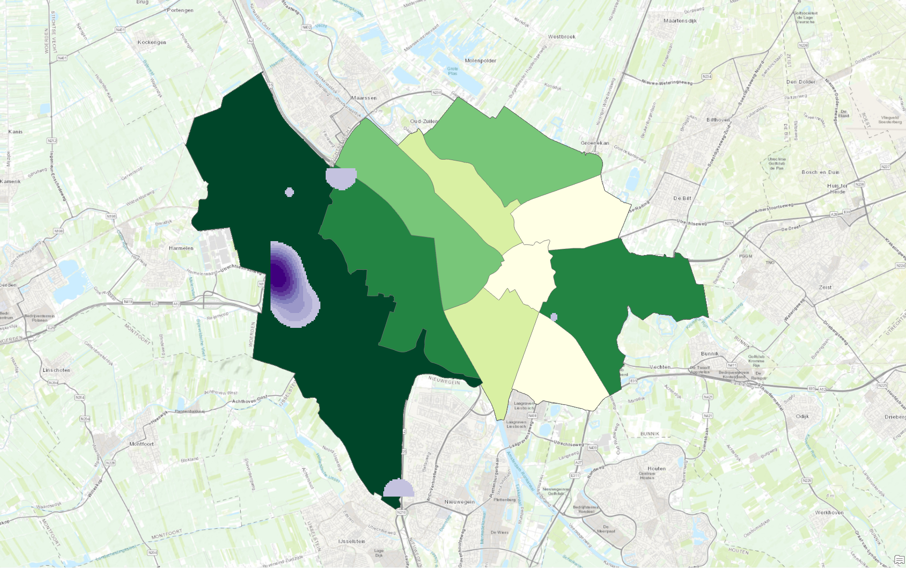

Vector
The map above was constructed using vector data. It is a combination of two layers which I combined. The first is that of a choropleth map and the second that of a kernel density distribution. Vector data is a type of data used in geographic information systems (GIS) to represent geographic features in the form of geometric shapes. Unlike raster data, which uses a grid of cells to represent spatial information, vector data uses points, lines, and polygons to depict the locations and shapes of various features on the Earth's surface. Each of these geometric shapes is associated with attributes that describe the properties of the features they represent.
The origional vector data which I used for the map cam form the open source data available form the municipality of Utrecht. In the Boemenkaart which I used all of the trees in Utrecht are maped and their scienctific, dutch name and year of plantation are specified. For This project i selected my favorite trees in the city. By running a classification by polygon, representing the cities neighborhoods, I ran a area density calculation to normalize the data and create a chorolpeth map. With the lack of a legend above I would like to precise that the darker regions are thosre whith a greater concentration. Next I created a kernel density map which visually is easy to see what specific parts of the city hold the most trees. These are shown by the circular shaded purple spots.